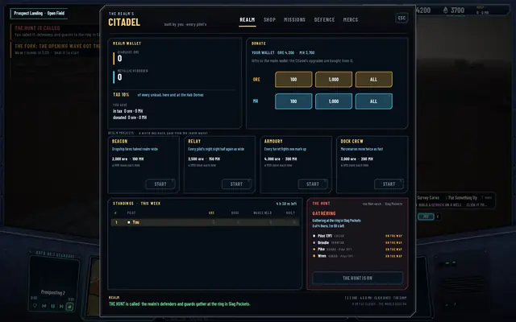
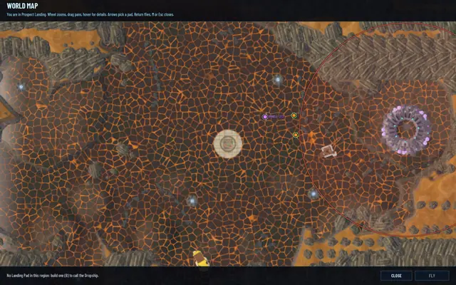
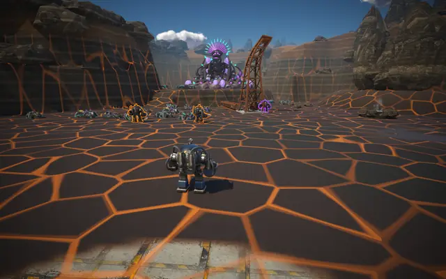
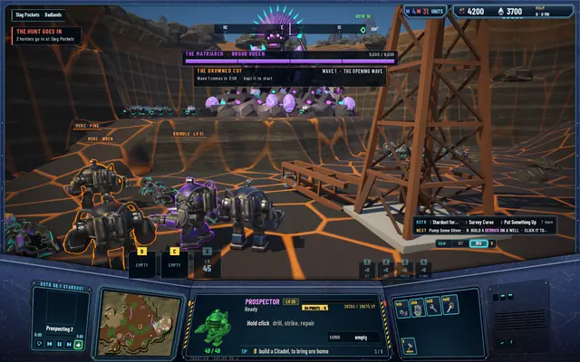
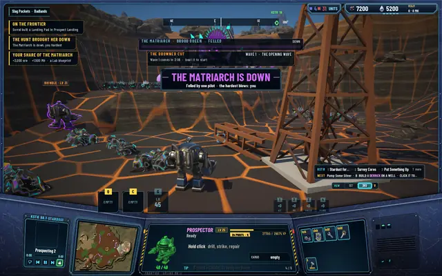

The hunt: the realm's raid on the Matriarch
The Matriarch has sat in her nest in Slag Pockets since the siege milestone, a fight for whoever walked in. Now she's the realm's raid. A human calls the hunt at a Citadel, the realm's defenders and guards travel to the ring round her nest by the same rules as everyone else, and they go in together.
The call
Any human pilot standing at a Citadel calls THE HUNT on the REALM tab, in a box beside the standings. It's free and once a world day for the whole realm, with the next call at dawn. It's refused with the reason when she's down, since she takes three world days to return, when the Brood is out on a siege, when a hunt is already on, or when the day's call is spent. A frontier pilot never calls it. The goal that points at her, Bring Her Down, moved from level 35 to 20, so a pilot meets the idea much sooner.
The party, and the walk
The party is chosen at the call: every frontier pilot with the defender habit that has come to the world, and every guard mercenary of every pilot, on line or off. Mercenaries have a role now, miner or guard, picked at hire and switched on the MERCS tab, same wage; a guard answers the hunt and mines the rest of the time. Each takes a place on a ring 30 cells round her nest and goes there by the realm's rules. A defender walks through the openings or flies the Dropship between the realm's pads when both regions have one and its wallet covers the fare. A guard walks. Nobody teleports: one that can't make it in time comes late, one with no way comes not at all. In the First Reach a defender from the next region is at the ring in about 30 seconds, one from the far corner in about two minutes. At the ring they hold and fight the bugs that come at them.
You can watch it from the REALM tab's hunt box, with the state, the time left and each member AT THE RING, ON THE WAY or DOWN; from the world map, where a red ring circles the nest and the party shows as dots; and from the ground, where the party is simply there.
The assault
At two minutes, or when the caller steps inside the ring if that's later, they go in together. The fight is the one from the siege milestone: her slam, spit and roar, her pay to every pilot who hurt her by its share of the damage, with a guard's hits counted to its hirer, and her return in three world days. Her fall gives every pilot on line THE HUNT BROUGHT HER DOWN with the hardest hitter's name, a line in the away report for everyone else, and one bug felled in the standings to that hardest hitter. The hunt fails when ten minutes pass with her standing, or when the caller and everyone who went in are down; she stands, and the day's call is spent.
Five new radio lines carry it, called, gathered, charge, down and failed, which makes 47 in all. The pictures are from a hidden run with one defender, two hired guards and a call, her fall cut short by a dev line so the pay and the standings could be checked. Protocol 35, save schema 25, the suites at 505, 102 and 341.

The hunt box: a party of four gathering, all on the way.
The map: the red ring round her nest, the party as dots on their way.
At the ring. They hold here until the two minutes are up or the caller steps in.
THE HUNT GOES IN: the party charges the nest together.
Her fall, cut short by a dev line in this run: the toasts and the share.